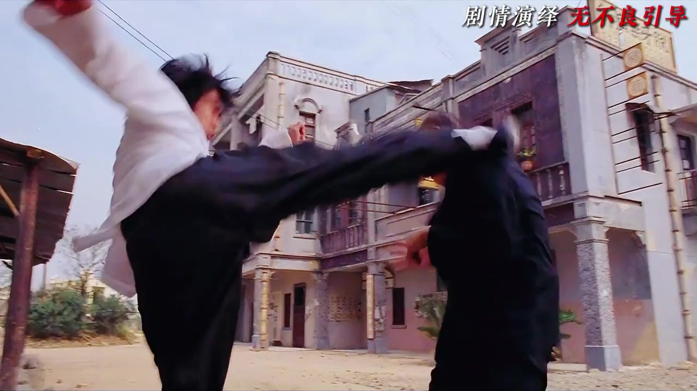
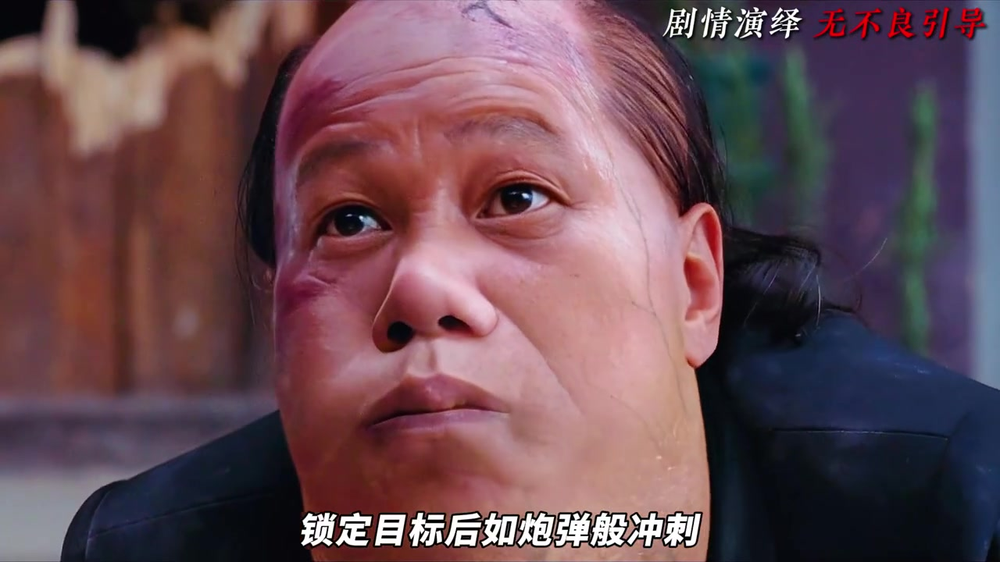
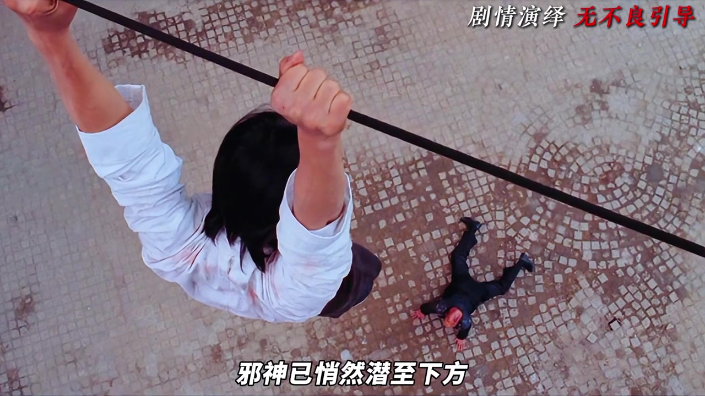
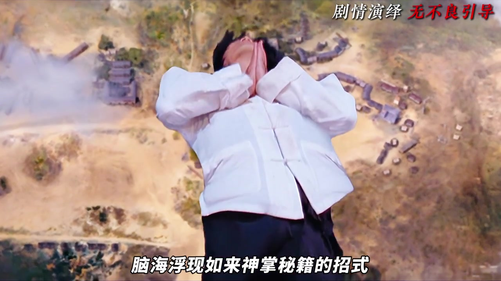
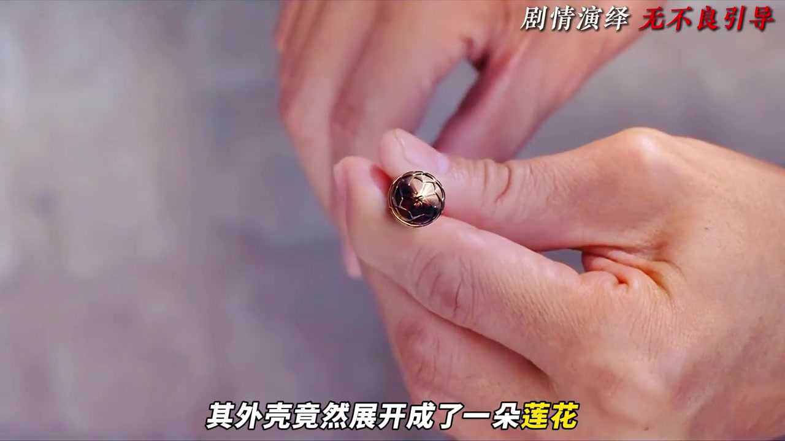
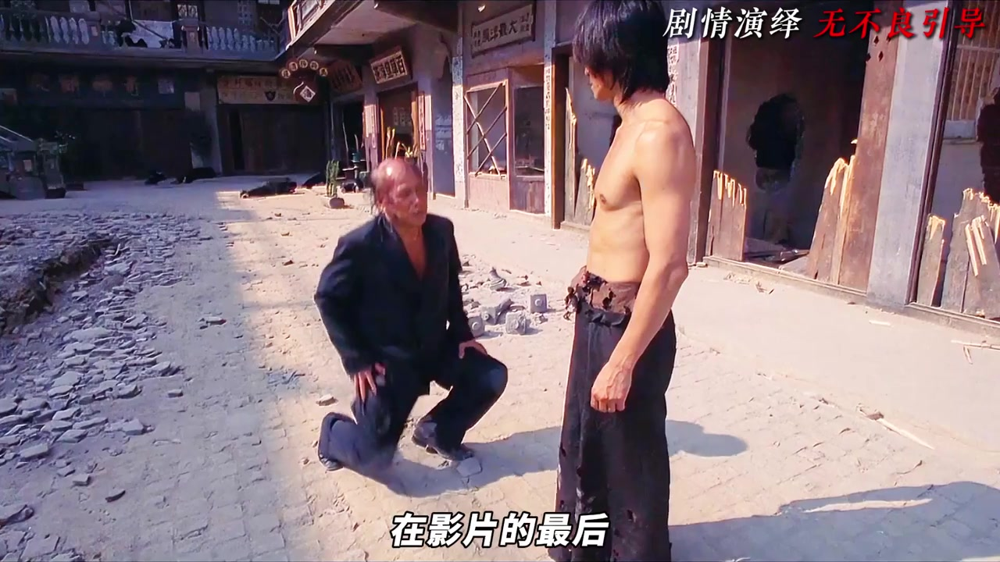

开场先抛问题：一秒钟怎样打碎反派压迫感
五月说剧用一个很抓人的问题开场：在周星驰电影里，主角如何在极短时间内击碎顶级反派的压迫感？答案并不落在招式名称，而落在他所说的“结构主义导演手法”——强烈的视听反差，把传统武侠对决的严肃感瞬间拆掉。

蛤蟆功登场：局部特写、拟音和侧面烘托
邪神挨拳后没有立刻倒地。导演先给局部特写：双腿弯曲、肌肉膨胀、两腮鼓胀。视频强调，画面里没有真正的蟾蜍，音效却补上逼真的蛤蟆叫声，让“人体异化”的不适感先于招式说明抵达观众。
随后邪神双足蹬地，身体如导弹撞向阿星。叙述者指出：导演没有继续拍传统套招，而是改拍环境被急剧破坏，用夸张的物理冲击把力量“巨象化”。旁观者喊出“昆仑派的蛤蟆功”时，招式被正式定名，紧张感也被拉到顶点。
把平面对打拉到垂直 Z 轴
面对蛤蟆功，阿星只能凭借轻功游走。邪神在地面观察落脚点，锁定后如炮弹冲刺。视频提醒观众看镜头语言：大量俯拍邪神、仰拍阿星，压迫感不只来自动作速度，也来自视角关系。

阿星闪躲到电线上，战斗从地面平面被“拉伸”到垂直空间：他在明处半空，邪神在暗处废墟。碎石试探没有回应后，镜头突然切到下方——邪神已悄然潜至脚下，直立冲起，阿星被顶中后不断上升。

升空、老鹰与大佛：凡人到神的视觉转场
冲击之后，阿星没有按常规动作片吐血倒地，而是被顶到万米高空。视频把这段称作全篇最浪漫、也最天马行空的视觉特效：空中旋转、借老鹰再上升，老鹰被解释为超脱与自由的视觉隐喻；抬头时，云朵化作大佛，阿星开悟，脑海浮现如来神掌招式。

如来神掌的威力：先压气势，再决定打不打中
高潮段落里，导演用类似“隐时坠落”的大气层摩擦特效：阿星头朝下快速下降，手掌燃起火焰，身体摩擦冒烟，化身人形火球。更关键的是——镜头没有直接拍掌法打在邪神身上，而是拍气势逼近：邪神被无形掌风压趴，拼尽全力仍难以反击。
听到投降后阿星收手，邪神却掏出暗器偷袭。于是出现全篇最震撼的调度之一：真正的强者一掌打偏。视频给出的解释是，强大不是杀戮，而是威慑与宽恕。
暗器展开成莲花：道具完成心理击溃
镜头切到极微观特写。致命机械暗器在结构展开后，外壳竟变成一朵莲花。视频将其读作佛家慈悲与净化的视觉象征：不必靠台词宣讲，道具形态转换加缓慢上摇，就能击穿反派心理防线。

随后阿星被极强逆光与极低仰拍托高，形象显得神圣；邪神跪地心服。这组镜头把“教不教你这招”的喜剧台词，和仪式感的构图叠在一起。

收尾不用台词：冷色变暖，棒棒糖完成回归
影片最后被描述为摒弃说教台词，改用色彩心理学与视觉符号收束。战斗废墟的灰暗冷色瞬间揉成怀旧暖黄，像在潜意识里给观众做“情绪按摩”，宣告暴力终结。
棒棒糖与五颜六色的糖果道具，配合男女主角无声的视线匹配剪辑，完成角色命运的最终回还。视频结尾，五月说剧把这种做法总结为“极简的视听留白”，把暴力终点导向童真回归。
说明：以上镜头解读是创作者对《功夫》段落的视听分析；片中具体桥段属于剧情演绎，页面保留平台免责声明信息，不鼓励模仿危险动作。